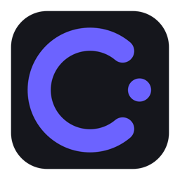
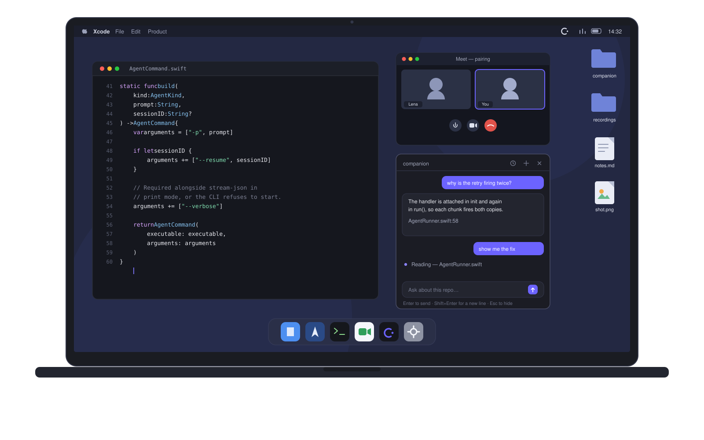
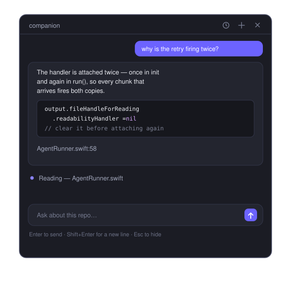

Companion GitHubAsk about the code you and your pair are working through, in a panel that sits beside your editor instead of on top of the conversation.
macOS 14 or later · Apple Silicon · free and open source

Why
The moment you go looking something up — a browser tab, a chat window, a second editor — the code your pair was following slides off screen and you both lose the thread. Companion answers next to the code instead: summon it with a shortcut, ask, dismiss.
The panel takes your typing while your editor stays the active app. Your cursor doesn't jump, and the call app sees no window switch.
Not a screenshot, not the visible 40 lines — the real files on disk, plus the diff of what you have changed this session.
An assistant should not edit the code you are demonstrating to someone. Editing stays off until you turn it on.
It also stays out of the shared view — macOS screen capture skips the window, so opening it does not change what your pair sees.
How it works
Companion does not call a model itself. It drives a coding agent you already have installed, running headless in your repo — which means the hard parts are already solved.
Claude Code or Codex already holds your login. Companion spawns the CLI and reads its output, so there is no key in the app, nothing to leak, and no per-token bill.
Deciding what to read and when to compact a long thread is the hardest part of building this kind of tool. The agent already does it.
Each conversation remembers the agent's session, so "no, do it the other way" reaches an agent that still knows what it read.
An assistant should not edit the code you are demonstrating to someone. Editing is off until you turn it on.
Using it
| ⌥ Space | Show or hide the panel |
| Enter | Send |
| ⇧ Enter | New line |
| Esc | Hide |
You type rather than talk, on purpose — your microphone is live in the call, so speaking to an assistant means everyone hears you doing it.

Install
Companion needs one agent CLI installed and signed in. Either works.
brew install --cask souhaibbenfarhat/tap/companion
Use the full tap name — Homebrew's main tap already has a companion cask for an unrelated app.
npm install -g @anthropic-ai/claude-codenpm install -g @openai/codex
Companion is ad-hoc signed rather than notarized. Homebrew clears the
quarantine flag for you. Installing the zip by hand instead? Run
xattr -dr com.apple.quarantine /Applications/Companion.app once.